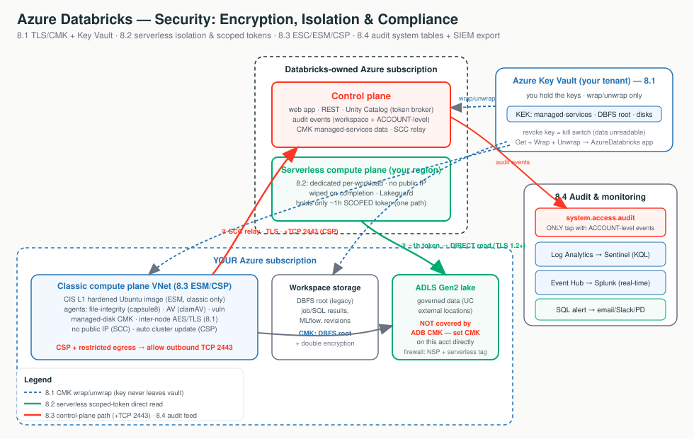

Think of Azure Databricks security like a secure, certified hotel. Stages 2-7 locked the doors and hallways. Stage 8 protects what's inside the rooms - and installs the cameras.
Sealed envelopes on every hop. Always on, no toggle.
You hold the key in Azure Key Vault, so you can rotate or revoke it.
A hotel where the master key does not exist.
Scoped keycard that opens one room for one hour.
Certified building, cameras, and the bill.
The CCTV tape, searchable in SQL.
The feed wired to the central security desk.
None of these is a 4th path - they ride, harden, or watch the three you know.

Each tab below has its own clickable whiteboard: Encryption & keys → Encryption / CMK, Serverless isolation → Isolation, Audit & SIEM → Audit & Monitoring. Open a tab, then click a box to see what it does in plain English.
Encryption is on by default and CMK only changes who holds the key; serverless isolation is proven by architecture, not your perimeter; CSP is the permanent certified posture you scope to regulated workspaces; and you prove all of it with system tables plus a SIEM export.
Encryption just means scrambling data so only someone with the right key can read it - like a locked diary. The only real choice here is who holds the key: by default Microsoft does, but you can choose to hold it yourself in your own safe (Azure Key Vault) so you can take it away whenever you want.
In transit: data is scrambled while it moves. Azure Databricks uses TLS 1.2+ on every hop - always on, no toggle.
At rest: data is scrambled while it sits on disk. Azure Storage does this with AES-256 automatically.
A key is the secret that unlocks at-rest encryption. By default Microsoft holds it. With a Customer-Managed Key (CMK) you hold it in Azure Key Vault, so you can rotate or revoke it.
Click each box to see what CMK protects and where the key lives.
| CMK feature | Protects | Where it lives | Compute |
|---|---|---|---|
| Managed services | Notebooks, results, secrets, SQL history, dashboards | Control plane | Classic + serverless |
| DBFS root | Workspace system data, job/SQL results, MLflow, revisions | Workspace storage account | Classic + serverless |
| Managed disks | Temp / shuffle / spill on VM disks | Compute plane VMs | Classic only |
Databricks generates a data-encryption key (DEK) and asks Key Vault to wrap/unwrap it with your key-encryption key (KEK). The KEK never leaves the vault. That's why you grant only Get + Wrap Key + Unwrap Key (the Key Vault Crypto Service Encryption User role).
None of the three CMK features cover your ADLS Gen2 data lake. That's a separate storage account - set CMK on it directly in Azure Storage. ADB CMK only covers control-plane data, the workspace root, and VM disks.
"Everything is encrypted in transit with TLS and at rest with AES-256 already, for free. CMK doesn't add a second layer - it hands you the key, in your own Azure Key Vault, so you can rotate it or revoke it as a kill switch."
Login/reads fail after a key change (key disabled or role lost) · CMK rejected at deploy (used latest, non-RSA, or cross-tenant vault) · worker-to-worker shuffle is unencrypted by default (close it with Azure VNet encryption). Managed-services CMK is irreversible and a lost key with no purge protection bricks the workspace.
Think of a shared apartment building where many tenants live under one roof - that's multi-tenant. Isolation is the promise that no tenant can ever peek into another's apartment. The tricky case is serverless, where your work runs on Databricks' own machines (not your network), so the walls between tenants have to be built into the platform itself.
Isolation is the guarantee that one running workload can't see, touch, or impersonate another - another customer, another user, or even Databricks code.
The hard case is serverless: it runs in the Databricks-managed serverless plane, not your VNet. So isolation can't rely on your network boundary - it's built into the platform.
Click the boxes to follow the one-hour scoped token to storage.
Instead of a long-lived secret on the cluster, each workload gets a short-lived (~1-hour) token scoped to exactly that workload's data, used to talk directly to your storage. The control plane mints it but never proxies the bytes.
| Layer | How it isolates |
|---|---|
| Between tenants | Dedicated compute per workload, wiped on completion (no warm pool), no public IPs, no baked-in credentials |
| The token | Unity Catalog checks READ/WRITE, then vends a down-scoped, time-bound token straight to the workload |
| Inside a workspace | Lakeguard: Spark Connect, container sandbox, UDF isolation on shared compute |
| Access modes | Standard = multi-user Lakeguard-isolated · Dedicated = isolation by not sharing · Serverless = Lakeguard + platform |
"If serverless runs in Databricks' account, what stops another tenant - or Databricks - reading our data? Dedicated compute wiped on completion, no warm pool, no public IPs, and UC vends a one-hour, path-scoped token used directly to your ADLS. A stolen keycard buys one room for one hour, nothing more."
Serverless 403 to firewalled storage (stale subnet-ID rule instead of the regional AzureDatabricksServerless.<region> tag) · permission denied (caller lacks UC grant, or Access Connector lacks Storage Blob Data Contributor) · multi-user job sees another's data (Dedicated misused, not Standard/Lakeguard) · whole firewall breaks (NSP flipped to Enforced; stay in Transition).
By 2026-06-09, storage accounts that allowlisted serverless subnet IDs must move to an NSP plus the AzureDatabricksServerless service tag.
A compliance standard is a rulebook a regulator says you must follow to handle sensitive data - like a health inspector's checklist for a restaurant kitchen. To process that data you flip on a stricter, locked-down mode called the Compliance Security Profile (CSP), which makes your workspace meet the rulebook and proves it.
Three layers regulated customers conflate, nested like Russian dolls: CSP > ESM > hardened image.
| Layer | Plain meaning | Analogy |
|---|---|---|
| ESC (Enhanced Security & Compliance add-on) | The billing/entitlement layer on top of Premium; enabling ESM or CSP activates the charge | The bill |
| ESM (Enhanced Security Monitoring) | CIS L1 hardened image + 3 agents (file-integrity, antivirus, vuln-scan), classic only | The cameras |
| CSP (Compliance Security Profile) | ESM + automatic cluster update + TLS 1.2+ everywhere + attachable standards (HIPAA, PCI-DSS, IRAP...) | The certified building |
Turning CSP on (and attaching a standard) hardens the classic compute plane permanently. There's no toggle off - the only path back is delete + rebuild the workspace. So scope it to the workspaces that actually touch regulated data.
azurerm accepts only HIPAA, PCI_DSS, NONE; other standards need Portal/CLI/PS/ARM."The platform holds the HIPAA/PCI/IRAP attestations, but to process regulated data you turn on the Compliance Security Profile with the matching standard on that workspace. It's the certified posture, and it's permanent, so we scope it. ESC is the bill, ESM is the cameras, CSP is the certified building."
HIPAA / HITRUST / IRAP become CSP-mandatory on 2026-09-01. Verify the standard x region x plane cell before promising it.
An audit log is a tamper-evident record of who did what, to what, and when - like the security-camera tape for your workspace. You can watch the tape two ways: search it yourself in SQL, or pipe the feed to the central security desk (your SIEM) that watches every system in the company.
system.access.audit) - the tape stored as a table you query in SQL.An audit log is an immutable record of actions - login, GRANT, cluster start, failed permission check - answering "who did what, to what, when, from where."
One audit stream, two taps. Click the boxes to see why you run both.
| Tap | What it is | Scope |
|---|---|---|
| System tables | UC-governed Delta; audit log at system.access.audit, queried in SQL | The only tap with account-level events (workspace_id = 0) |
| Diagnostic settings | Azure export to Log Analytics / Storage / Event Hub for your SIEM | Workspace-level only |
Account-admin, account-SCIM, and metastore-grant events appear only in the system table. A SIEM-only strategy has a blind spot - so best practice is both.
service_name + action_name identify the event.response.statusCode != 200 is your denied/failed filter.event_date predicate - system tables reject broad scans."Where's your audit trail, and can you feed our SIEM? Both. You query the trail in SQL through system tables, and export it natively to Sentinel or Splunk through diagnostic settings. Run both, because account-level events live only in the system table."
"Too much data" query error (no event_date predicate) · SIEM missing account-admin events (they're ACCOUNT_LEVEL, never flow to diagnostic settings) · analyst can't see the table (missing UC grants, not a workspace permission) · new category missing from Log Analytics (hard-coded list; use a dynamic one).
Don't start from CMK flags or audit columns. Start by asking what's being protected and who holds the key.
| Symptom | First Thing To Think |
|---|---|
| Login/reads fail after a key change | Is the Key Vault key enabled and does the AzureDatabricks app still hold wrap/unwrap? |
| Auditor says the data lake isn't customer-keyed | CMK is on the workspace, not on the ADLS account itself |
| Serverless 403 to firewalled storage | Regional AzureDatabricksServerless.<region> tag, NSP in Transition (not a stale subnet-ID rule) |
| Multi-user job sees another user's data | Is the access mode Standard (Lakeguard), not Dedicated-misused/legacy? |
| CSP compute won't start on a locked-down VNet | Outbound TCP 2443 rule (+ Azure VNet encryption / supported VM type) |
| Cluster won't launch on CSP/ESM | Is the VM Gen2 or Arm64? Both are blocked |
| SIEM missing account-admin events | They're ACCOUNT_LEVEL (workspace_id = 0); query the system table |
| "Too much data" query error | Add an event_date predicate |